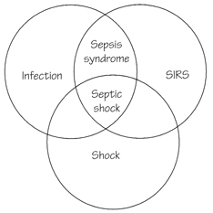
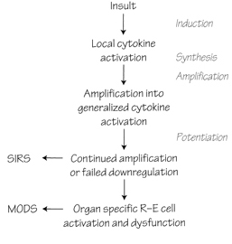
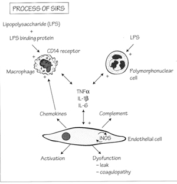
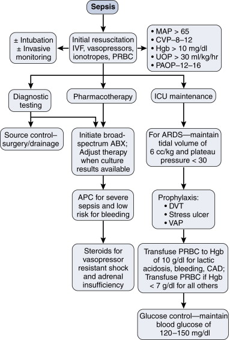

| Early |
Late |
| Restlessness, slight confusion |
Decreases consciousness |
| Tachypnoea |
Tachypnoea |
| Tachycardia |
Tachycardia |
| Low SVR |
|
| High CO |
Low CO |
| BP N or up |
BP sys<80 |
| Oliguria |
Oliguria |
| Metabolic acidosis |
Metabolic acidosis |
| Warm, dry extremities |
Cold extremities |
